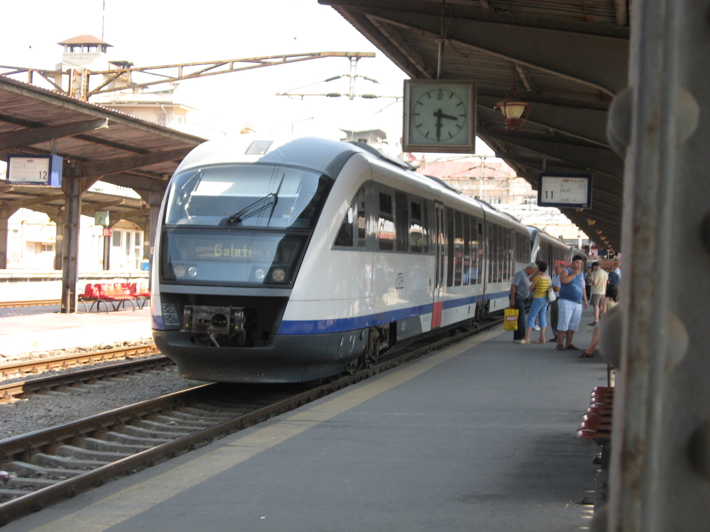
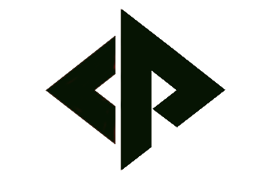
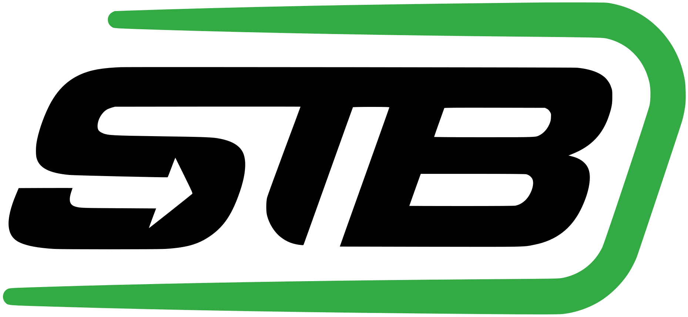
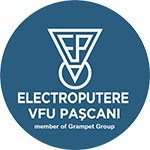
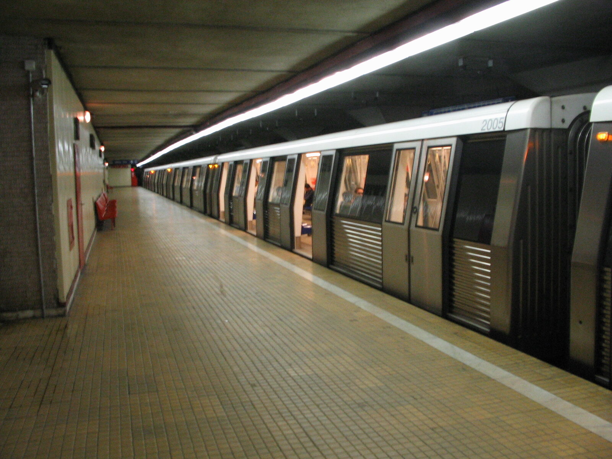
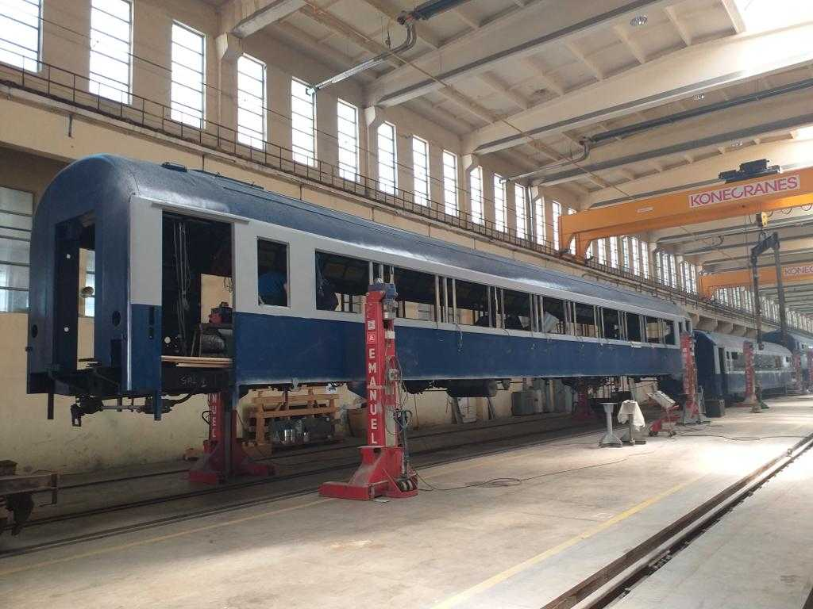
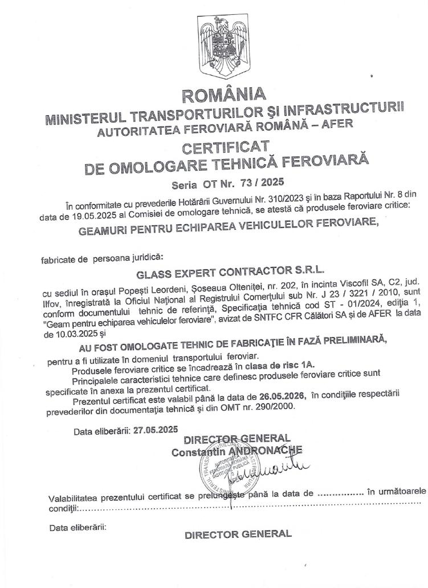
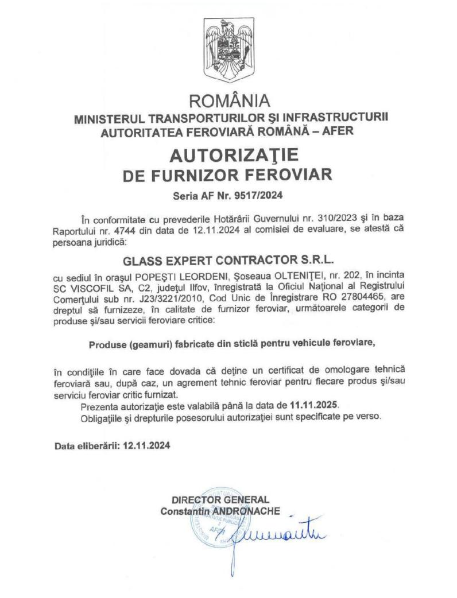
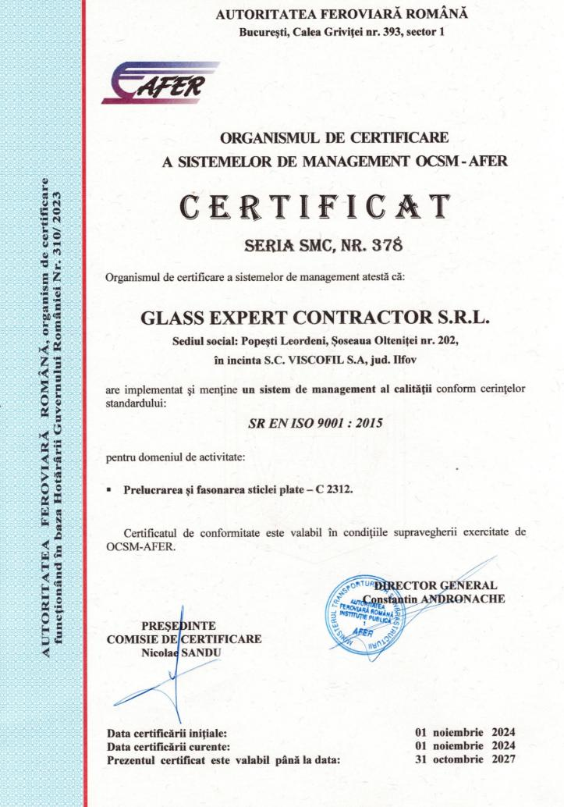

CFR Călători
Desiro SR 20D „Săgeata Albastră"
120 automotoare Siemens Desiro Class 96 operate pe rute Regio și InterRegio. Furnizăm toate geamurile flotei — parbrize cabină, ferestre laterale, uși.
RAILAMRAILDURParbrizeLaterale
Parbrize, geamuri laterale, uși și panouri interioare pentru vagoane, locomotive, tramvaie și metrou — produse conform AFER și standardelor europene, livrate în 1-2 săptămâni pe piața RO.





Moștenim 25+ ani de procesare premium din Glass Expert (EVOLAM, EVODUR, EVOPRINT, smart glass) și le aplicăm pe specificul feroviar — cu certificare AFER și conformitate EN 15152.
Sticlă laminată multistrat pentru parbrize și geamuri laterale de siguranță. Rezistență la impact + abraziune + balistic.
Sticlă călită termic pentru laterale vagon, partiții și uși. Rezistență mecanică superioară, fragmentare sigură.
Sticlă switchable PDLC pentru compartimente VIP, cabine PMR și separatoare cu intimitate la cerere.
Imprimare cu cerneală ceramică pentru livery brand, anti-solar gradient, sablare decorativă și signalistică.
Strat antimicrobian și self-cleaning pentru zonele de mare contact pasageri — uși, mânere, panouri toaletă.
Vagoane călători, locomotive, rame de mare viteză. Parbrize curbe sau plane, ferestre laterale termoizolante, uși, panouri interioare, portbagaj.

Cabine șofer, ferestre laterale, uși pasageri, separatoare. Compatibil retrofit flote Imperio (Astra) și Bozankaya în service.

Geamuri rame călători, uși pasageri și interior. Conformitate TSI LOC&PAS pentru rețea TEN-T și cerințe Metrorex.
Glass Expert Contractor are contracte active cu cei mai importanți operatori și ateliere de material rulant din România. Furnizăm geamuri certificate AFER pentru flote operate zi de zi.
120 automotoare Siemens Desiro Class 96 operate pe rute Regio și InterRegio. Furnizăm toate geamurile flotei — parbrize cabină, ferestre laterale, uși.
100 tramvaie Astra Imperio Metropolitan, 36 m lungime, 322 pasageri/unitate. Geamuri laterale, uși și partiții interioare pentru flota nouă STB.

Furnizăm geamuri pentru programul de reparații + retrofit ferestre desfășurat la Atelierele Grivița — vagoane călători CFR scoase din uz pentru întreținere.
Contract activ pe programul PNRR de modernizare a 42 vagoane călători (22 cls. 2 + 20 cu dotări PMR). Furnizăm geamurile la modernizare integrală.
Societatea de Reparații Locomotive C.F.R. — Brașov. Furnizăm parbrize cabină mecanic și geamuri laterale pentru programul de reparații al locomotivelor.
Primele 16 trenuri 160 km/h din România. Pipeline activ — discuții comerciale în desfășurare. Următorul reper VAGOGLASS pe flota CFR Călători.
Glass Expert Contractor S.R.L. operează cu omologare tehnică feroviară activă și autorizație de furnizor feroviar emise de Autoritatea Feroviară Română.

AFERGeamuri pentru echiparea vehiculelor feroviare. Avizat de SNTFC CFR Călători SA + AFER la 10.03.2025. Clasă de risc 1A. Specificația tehnică ST-01/2024.

AFERProduse (geamuri) din sticlă pentru vehicule feroviare — drept de a furniza categorii de produse și servicii feroviare critice pe piața din România.

ISO 9001Sistem de management al calității pentru prelucrarea și fasonarea sticlei plate — cod CAEN C 2312.
Documentația completă (copii autentificate) disponibilă la cerere pentru oferte comerciale. · Cere documentele →
Operăm conform standardelor europene și omologărilor obligatorii pe piața românească. Documentația completă disponibilă la cerere.
VAGOGLASS este una dintre cele mai rapide creșteri de gamă rail glass din România. Investim continuu în certificări, tehnologii și parteneriate.
Răspundem la cereri tehnice în maxim 24 ore. Inginerii noștri pregătesc datasheet personalizat per aplicație.